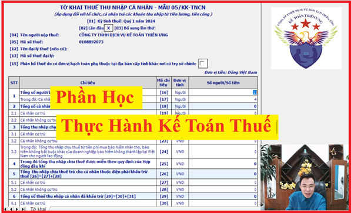
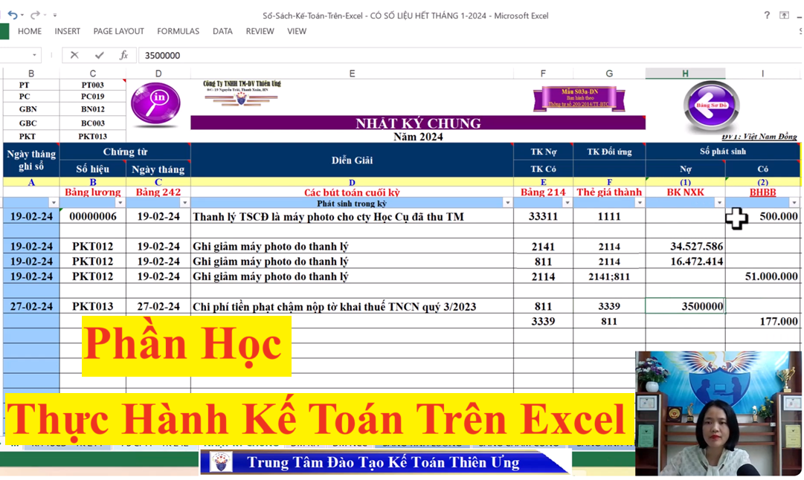
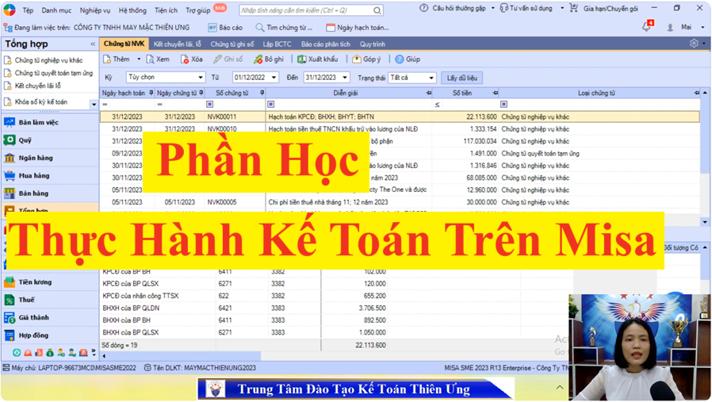
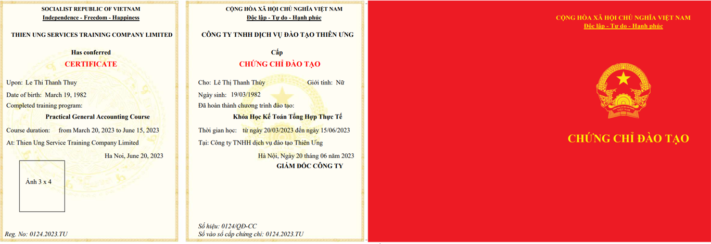

Khóa học thực hành kế toán tổng hợp cho người đã biết về kế toán dạy cách xử lý hóa đơn chứng từ, tình huống kế toán, kê khai làm báo thuế hàng tháng, quý và quyết toán thuế cuối năm. Dạy thực hành cách lên sổ sách, lập Báo Cáo Tài Chính cuối năm trên Excel và Phần mềm kế toán Misa...
+ Đối tượng tham gia khóa học: Những bạn đã học về kế toán, đã biết định khoản hạch toán
+ Tổng thời gian đào tạo: 37 buổi
+ Hình thức đào tạo: Dạy online (Trực tuyến qua mạng) (Có giáo viên trực tiếp đứng lớp hướng dẫn thực hành và có giáo viên lưu động để hỗ trợ giải đáp vướng mắc trong quá trình học)
+ Nội dung đào tạo: gồm có 3 phần chính như sau:
+/ Thực hành lên sổ sách, lập báo cáo tài chính trên Excel
+/ Thực hành lên sổ sách, lập báo cáo tài chính trên phần mềm kế toán Misa
Chi tiết về nội dung chương trình đào tạo của từng phần như sau:
* Đối với phần “Thực Hành Làm Kế toán Thuế”:
Như đúng tên gọi thì tại phần này Công ty TNHH Tư vấn & Đào tạo Diệu Tâm sẽ tập chung hướng dẫn các bạn cách làm kế toán thuế trong doanh nghiệp thực tế:

+ Về hóa đơn:
+/ Dạy cách xử lý hóa đơn chứng từ kế toán (sao cho hợp lý, hợp lệ, hợp pháp và cách khắc phục khi có sai sót)
+/ Dạy cách sắp xếp, lưu trữ, hoàn thiện hồ sơ, hóa đơn, chứng từ kế toán sao cho hợp lý
+ Về kê khai làm báo cáo thuế:
+/ Dạy cách khắc phục, cách xử lý khi phát hiện ra tờ khai thuế có sai sót (Cách kê khai điều chỉnh bổ sung tờ khai thuế theo quy định của Luật quản lý thuế)
+/ Dạy các kỹ năng, kinh nghiệm xử lý các tình huống kế toán thuế phát sinh trong doanh nghiệp thực tế
+/ Chia sẻ cách cân đối lãi lỗ, tối ưu số thuế phải nộp (sao cho tiết kiệm và hợp lý nhất)
+ Về quyết toán thuế:
+/ Dạy thực hành làm tờ khai quyết toán thuế thu nhập cá nhân trên phần mềm HTKK
+ Ngoài ra tại phần này Công ty TNHH Tư vấn & Đào tạo Diệu Tâm cũng sẽ hướng dẫn các cách đăng ký thuế như: đăng ký mã số thuế thu nhập cá nhân, đăng ký người phụ thuộc để tính giảm trừ gia cảnh khi tính thuế TNCN, cách làm cam kết thu nhập thấp để không bị khấu trừ thuế TNCN…
Phần thuế này thì các bạn sẽ học trong 17 buổi, chi tiết về nội dung của từng buổi thì các bạn vui lòng xem tại đây: Khóa Học Thực Hành Kế Toán Thuế
* Đối với phần “Thực hành lên sổ sách, lập báo cáo tài chính trên Excel”:
Mục đích của phần này là để các bạn biết cách xử lý hóa đơn chứng từ trước khi tiến hành hạch toán ghi sổ
Khi làm kế toán trên Excel thì các bạn sẽ hiểu rõ nhất về quy trình luân chuyển chứng từ, cấu trúc của từng loại sổ và quan trọng nhất là từng loại sổ sách đó được lập như thế nào để khi cần kiểm tra, báo cáo số liệu thì các bạn sẽ nguồn gốc của những số liệu đó được lấy từ đâu (sổ nào) ra => để các bạn giải trình cho giám đốc hoặc cơ quan thuế khi có yêu cầu

Cụ thể về nội dung đào tạo của phần này như sau:
+ Thực hành lập các loại sổ sách như: Sổ nhật ký chung, công nợ phải thu, phải trả, sổ chi tiết, sổ tổng hợp, sổ cái, sổ quỹ tiền mặt, sổ tiền gửi ngân hàng…
+ Thực hành tính toán các loại sổ, bảng, báo cáo như: tính đơn giá nhập kho, đơn giá xuất kho, làm bảng tổng hợp nhập xuất tồn, tính giá thành dịch vụ, làm bảng phân bổ chi phí trả trước, làm bảng trích khấu hao tài sản cố định, làm bảng chấm công, bảng tính lương, trích đóng bảo hiểm…
+ Thực hành lập báo cáo tài chính cuối năm
Phần Excel này thì các bạn sẽ học trong 10 buổi, chi tiết về nội dung của từng buổi thì các bạn vui lòng xem tại đây: Khóa Học Thực Hành Làm Sổ Sách Kế Toán Trên Excel
* Đối với phần “Thực hành lên sổ sách, lập báo cáo tài chính trên phần mềm kế toán Misa”:
Sau khi học xong phần Excel là các bạn đã biết được cách xử lý hóa đơn chứng từ cũng như hiểu được quy trình luân chuyển chứng từ, cấu trúc của từng loại sổ và mối quan hệ (link, lấy số liệu) giữa các sổ sách kế toán với nhau rồi

+ Thực hành làm sổ sách kế toán trên phần mềm Misa
+ Dạy cách tính giá thành sản phẩm. Các nghiệp vụ về kế toán tiền lương, bảo hiểm, công nợ, kho, công cụ dung cụ, tài sản cố định… hay kế toán dịch vụ, kế toán trong doanh nghiệp sản xuất cũng đều có trong phần học Misa này
+ Dạy cách kiểm tra số liệu trước khi lên báo cáo tài chính
+ Thực hành lập báo cáo tài chính cuối năm trên phần mềm Misa
+ Dạy cách kiểm tra đối chiếu số liệu giữa các sổ sách trên phần mềm Misa, và đối chiếu số liệu giữa phần mềm Misa và tờ khai thuế trên phần mềm HTKK và các bảng tính Excel liên quan khác… Hướng dẫn cách khắc phục, cách điều chỉnh khi phát hiện ra các sai sót, chênh lệch
---------------------------------------------------------------------------
Học phí của khóa học "Thực Hành Kế Toán Tổng Hợp" dành cho người đã biết về kế toán:
Học phí chưa giảm là: 4.000.000đ (chưa giảm giá)
Chương trình giảm giá, khuyến mại học phí hiện tại các bạn vui lòng xem tại đây:
Hoặc các bạn có thể liên hệ với Hotline: 0987.026.515 (Call or Zalo) để được tư vấn kỹ hơn
-------------------------------------------------------------------------------------
Các thông tin khác mà các bạn có thể muốn biết khi tìm hiểu về "Khóa Học Thực Hành Kế Toán Tổng Hợp cho người đã biết về kế toán":
1. Về Thời gian học:
Vì khóa học được dạy theo ca, theo lớp nên khi tham gia các khóa học tại Công ty TNHH Tư vấn & Đào tạo Diệu Tâm thì các bạn có thể lựa chọn 1 trong các ca sau:
(Mỗi ca học kéo dài trong khoảng 2 tiếng rưỡi)
Trong 1 tuần: bạn có thể học từ 3 buổi đến 6 buổi: Học lớp 2-4-6 hoặc + Học lớp 3-5-7 hoặc nếu bạn muốn học nhanh thì bạn có thể đăng ký học cả tuần: Từ thứ 2 - thứ 7 (bên mình nghỉ chủ nhật các bạn nhé)
2. Về việc học bù, học lại khi bạn có việc bận phải nghỉ một hoặc 1 vài buổi nào đó:
Công ty TNHH Tư vấn & Đào tạo Diệu Tâm không giới hạn thời gian học, thời gian thực hành
=> Dạy đến khi nào bạn tự tin làm được việc thì thôi
---------------------------------------------------------------

Bước 3: Nhận tài liệu và lịch khai giảng khóa học đã đăng ký.
Bước 4: Xem trước tài liệu và các video bổ trợ cho khóa học để khi đi học đạt chất lượng tốt nhất.
Bước 5: Tham gia khóa học theo lịch khai giảng, lịch học đã được thông báo qua mail tại bước 3
Các bạn muốn Đăng ký học hoặc cần Tư vấn xin liên hệ:

(Call or Zalo)
--------------------------------------------------------------------------
---------------------------------------------------------------------------